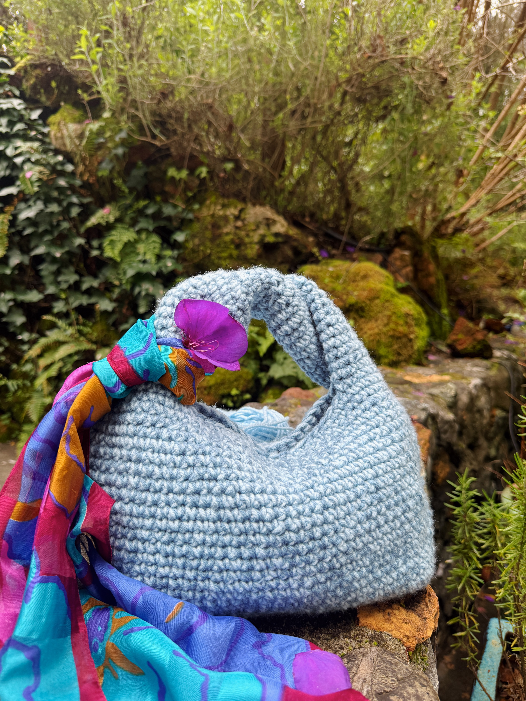
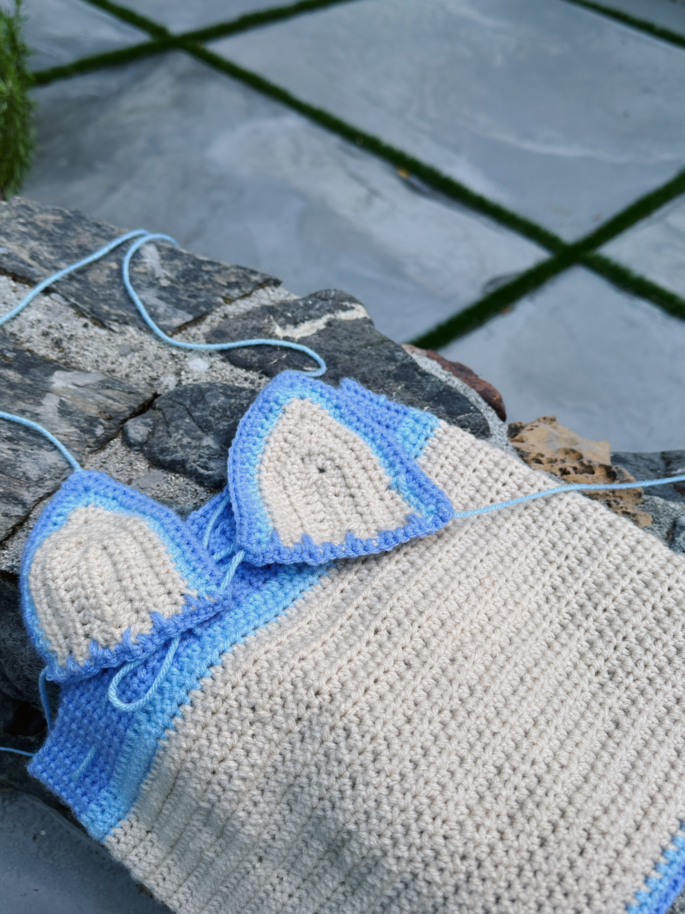
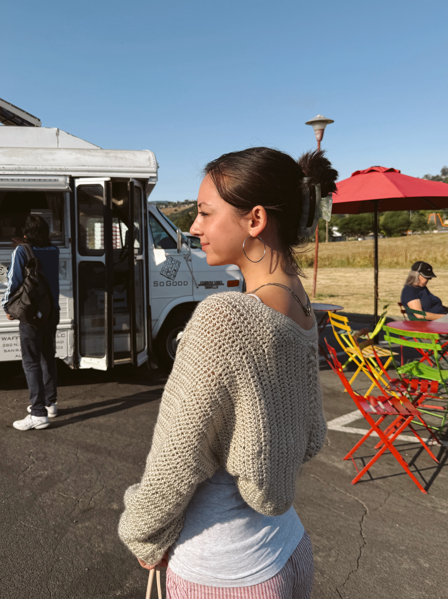
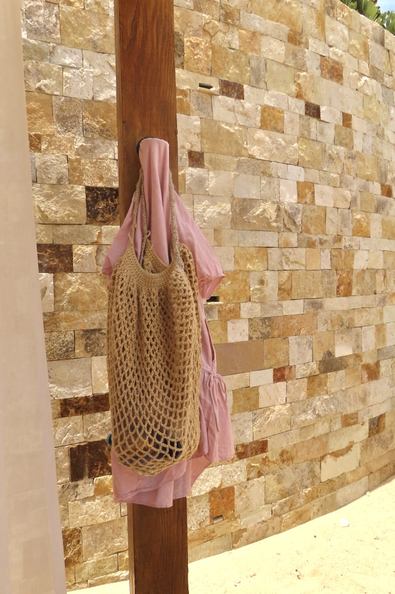
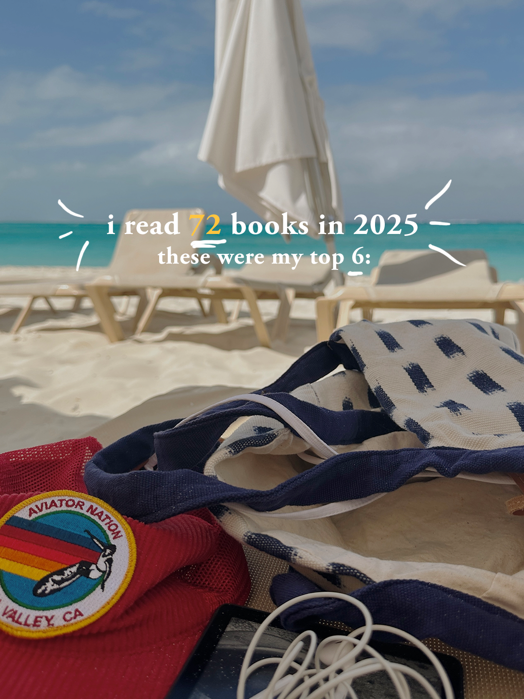
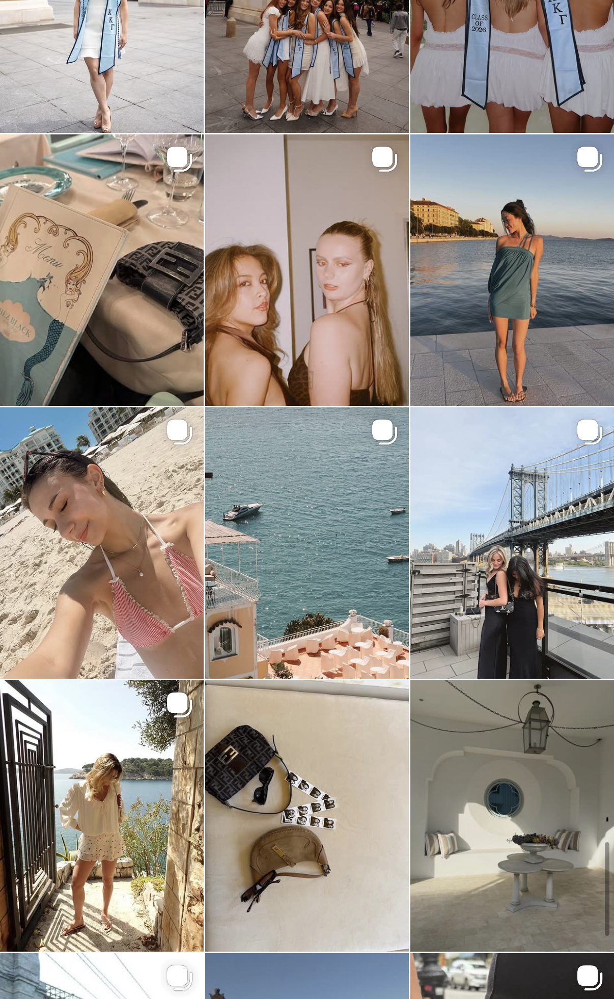

projects + hobbies
a collection of creative work outside of videography and web design — including crochet pieces, critical reading, and social media management.

crochet bag

crochet swim set

crochet shrug

crochet beach bag

i love to read and write about books! in 2025 i read 72

instagram management for my sorority